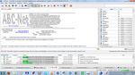
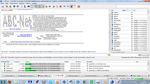

EiskaltDC++ — Скриншоты
Создано: 2010-08-15Обновлено: 2013-11-13
{kind=link}

EiskaltDC++ 2.1 (beta3) в Debian GNU/Linux (Sid)
KDE-4.4.5, для GTK+ и Qt используется тема QtCurve


EiskaltDC++ 2.1 (beta3). Слева: подключение к какому-то ADC хабу. Справа: подключение к хабу dc.ozerki.net
(dc.ozerki.net – один из крупнейших хабов в России, работает под Debian GNU/Linux)
{kind=link}
{kind=link}
EiskaltDC++ 2.0.2 (r936). Боковая панель виджетов (sidebar).

{kind=link}
EiskaltDC++ Qt 2.1 (beta3). Многострочная панель табов в вертикальном (слева) и горизонтальном (справа) положениях.
{kind=link}

EiskaltDC++ Gtk 2.1 (beta3). Общий чат (слева) и поисковый виджет (справа).
{kind=link}

EiskaltDC++ Gtk 2.1 (beta3). Общий чат (слева) и список файлов (справа), панель табов расположена слева.

{kind=link}

EiskaltDC++ Web UI 2.3.0 (767fe0e). Поиск (слева), список загрузок (в центре) и статистика (справа).


 



KDE__*.png © dein.negativ, e17_dark__*.png © egikpetrov, Mac_OS_X__*.png © gelraen.ua, MS_Windows__*.png © pavelvat, Haiku-OS__*.png © freenet59.ru
{kind=link}

{kind=link}


{kind=link}
Стандартные уведомления в EiskaltDC++ и FreeDC++.
Скриншот под Win7 предоставил pavelvat
Лицензия: Public Domain (ru, en)
Заметка: Все представленные здесь материалы можно использовать частично или полностью без указания ссылок на авторов и оригинальную страницу.
| . |
|
. |

|
. |
|